| 日付 | 2025年8月12日（火） - 2025年8月17日（日） | ||||||||||
|---|---|---|---|---|---|---|---|---|---|---|---|
| 山域 | 北アルプス | ||||||||||
| メンバー | 単独 | ||||||||||
| 山行形態 | 5泊6日テント、車中泊 | ||||||||||
| アクセス | 車、バス、電車 | ||||||||||
| ルート (Map) |
|
6日目
本日は5時に出発予定で3時半に起床。左手が痛くて撤収に時間がかかると見込み早めに起きた。
ちょうど5時に準備を終えて出発する。
昨日の夜空もきれいだったが、朝起きるとどんよりした天気。
毎朝、空を見てガッカリの連続だ。
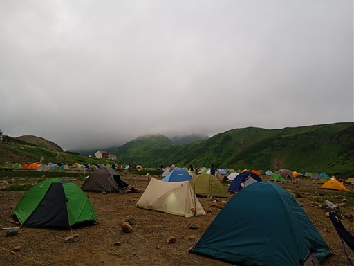
雷鳥沢を渡る。手を水につけてみたら、とても冷たい。

本日は下りメインだがいくらか登りもある。
新室堂乗越に向けて斜面を登っていく。
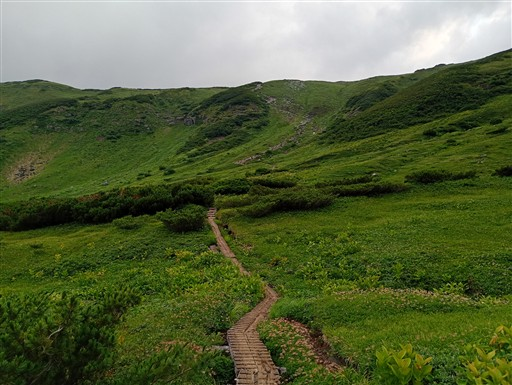
新室堂乗越に到着。剣御前小屋からの尾根道と合流する。
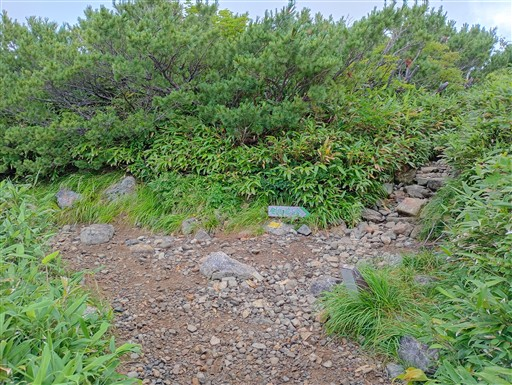
ここからは気持ちの良い尾根道。
左の室堂地獄谷からは噴気が上がる轟音がここまで鳴り響いている。
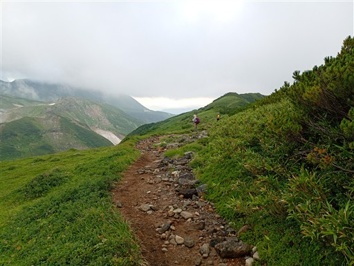
右側の視界が広がったが、残念ながら剱岳は雲の中。
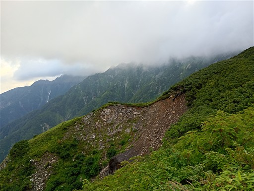
目の前に見える奥大日岳は思った以上に迫力のある山容だ。
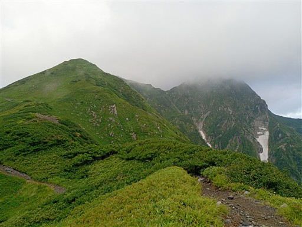
右側に見える沢には、いくつもの雪渓が落ち込んでいる。
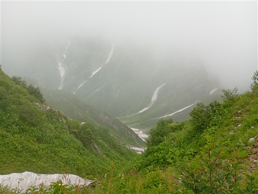
奥大日岳の最高点に立ち寄る。
標識に記載はなく、ただ「行き止まり」と書かれている。不親切だ。
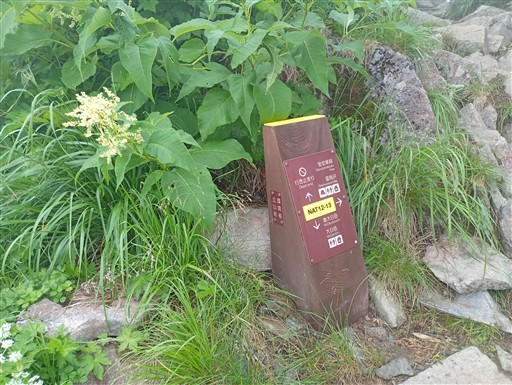
藪に覆われた道だったら行くのをやめようと思っていたが、道ははっきりしている。
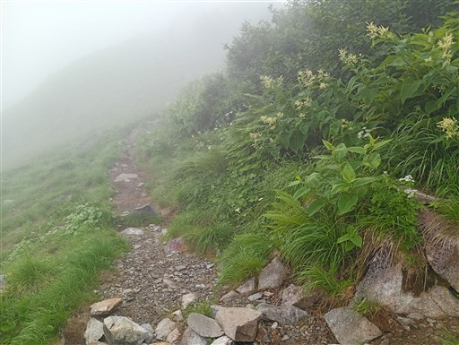
奥大日岳最高地点に到着。標高2611m。
三角点峰よりこちらの方が5m高い。
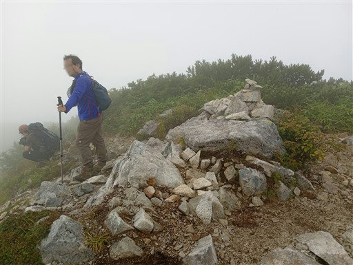
続いて奥大日岳山頂に到着。標高2606m。
三角点があるのはこちらで、山頂標識もこちら。
一般的にはこちらが山頂扱いされている。
いずれにせよ展望は全く広がらない。
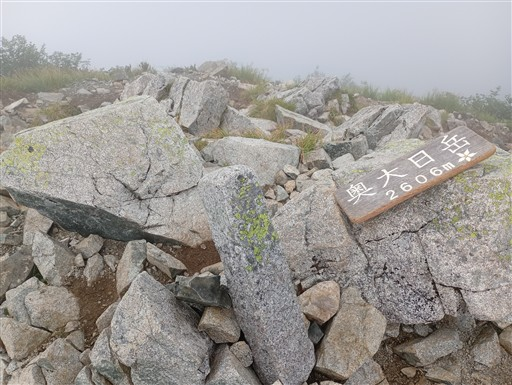
尾根道を先に進む。
小さな池の側にチングルマとハクサンイチゲが咲いている。
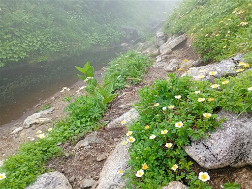
この辺りは二重山稜になっていて樹林に囲まれた窪地を歩く。
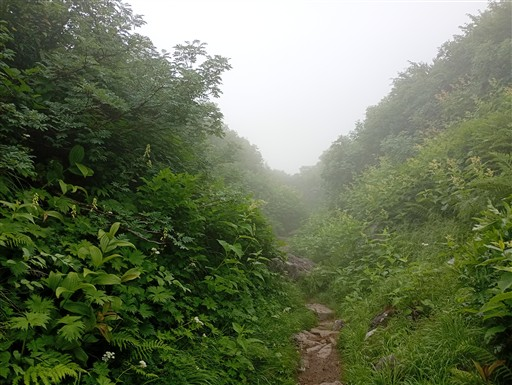
梯子が現れる。この辺りはちょっと険しい登山道だ。
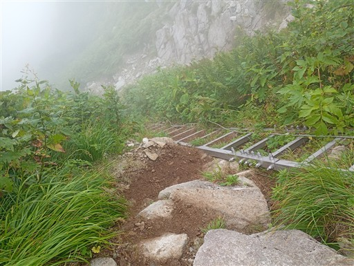
あちらこちらでカライトソウが風に揺れている。
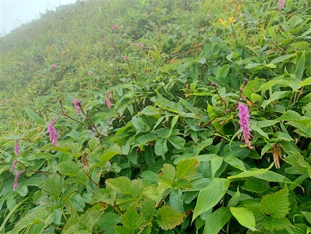
ヤマナメクジ。とにかく大きなナメクジだ。
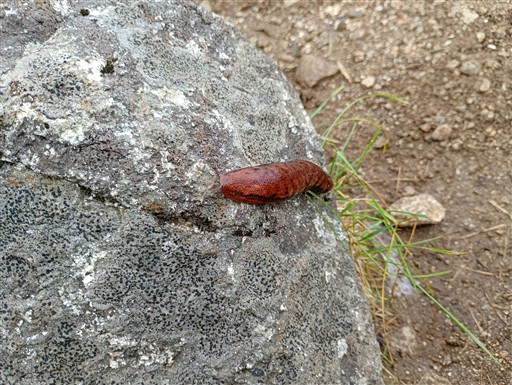
七福園に到着。巨岩が堆積する風光明媚な場所だ。
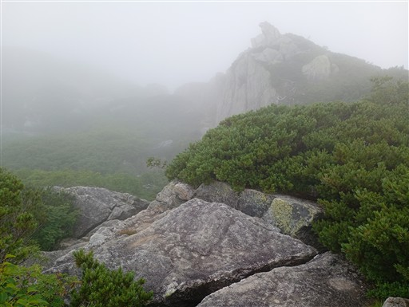
まるで水上アスレチックのような木道。
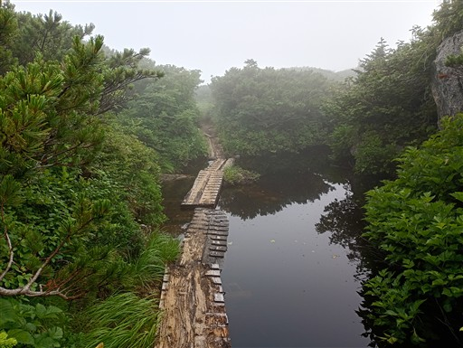
湿原地帯を通過。
この尾根道は変化に富んでいて、思った以上に楽しい道だ。
天気が良ければもっと素晴らしかったのだが…
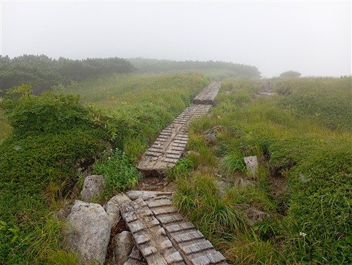
中大日岳に到着。標高2500m。
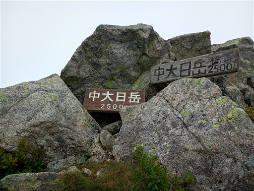
登山道が雲の下に出てきて、左手に広がる景色に驚いた。
とてつもなく広大な台地が広がっている。
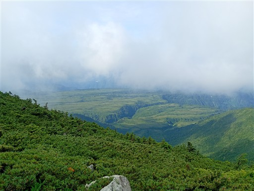
大日小屋に到着。この辺りにザックを置いて、空身で大日岳を往復する。
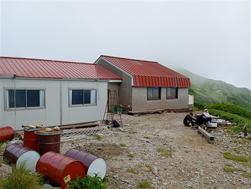
大日岳までは緩やかな登山道。
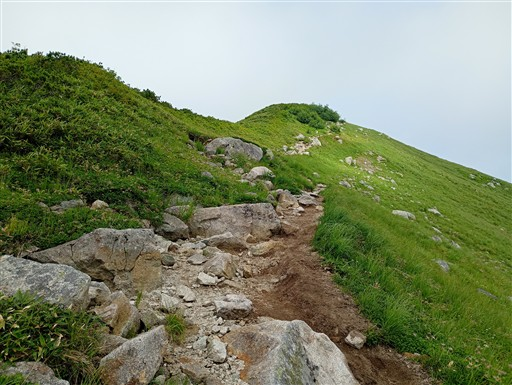
あっという間に大日岳に到着。標高2501m。
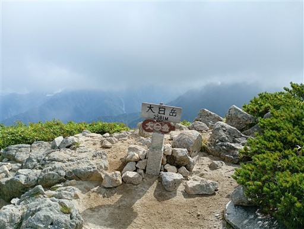
天気は回復傾向で山頂からは素晴らしい展望が広がる。
見えているのは毛勝山の辺り。
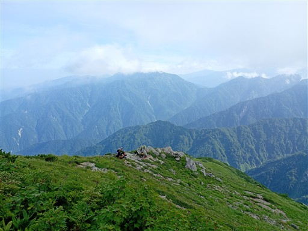
残念ながら剱岳は雲の中だが、もう少しで見えそうだ。

弥陀ヶ原の台地の真中に切れ込みがあるのが称名川。
そして、弧を描いているところが称名滝。
ものすごくダイナミックな地形だ。
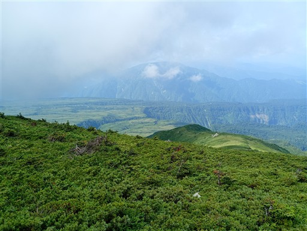
西側の富山市方面の展望。
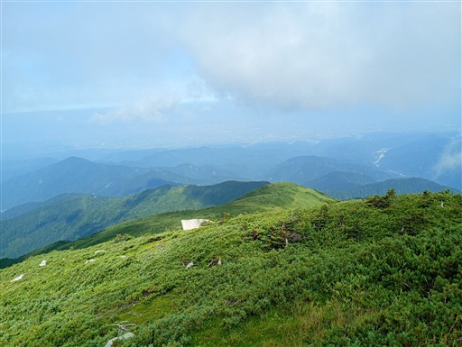
歩いてきた尾根道。奥大日岳方面はやっぱり雲の中だ。
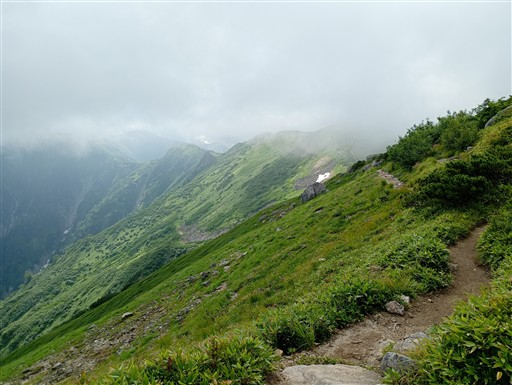
小屋に戻って出発の準備をしていると、雲が消えてついに剱岳がその姿を現す。
本日はずっとその姿を見せていなかったが、最後に雄姿を見せてくれた。
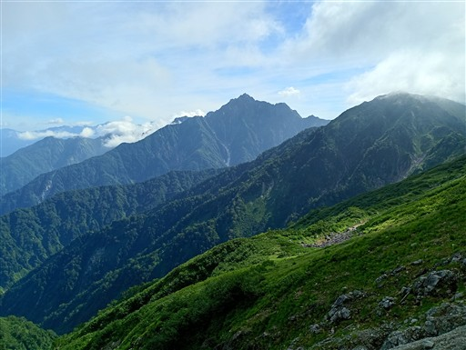
縦走はここまで。ここから下山だ。
登山道はトラバース気味に下っていく。
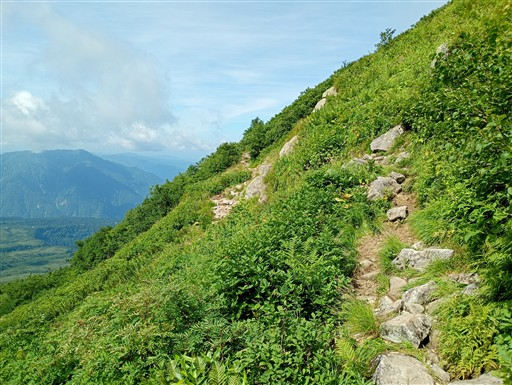
目の前に広がる景色は素晴らしい。
称名川を挟んで向こう側が弥陀ヶ原、こちら側が大日平。
その間の称名川を渡る吊り橋がかつてあったとか。そんなの絶対渡ってみたい。
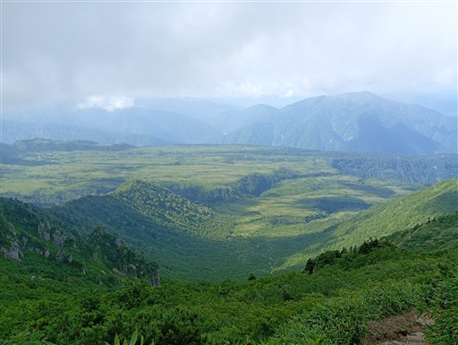
エンレイソウの実が仲良く3つ並んでいる。

弥陀ヶ原の向こう側に、まるで独立峰のように薬師岳が聳えている。
薬師岳も山行の最後にその姿を見せてくれた。
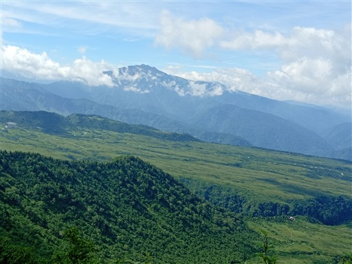
登山者が続々と登ってくる。本日は日曜日。大日岳への日帰り登山者だろうか？
とにかく急坂の道、そして高い気温。皆、汗だくだ。
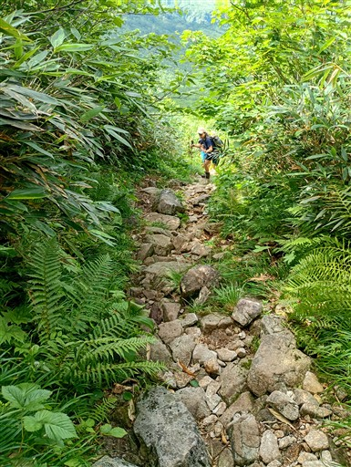
大日平に近づいてきた。少し傾斜があるからか、湿原ではなく笹原が多い。
背後に横たわっているのは鍬崎山だ。
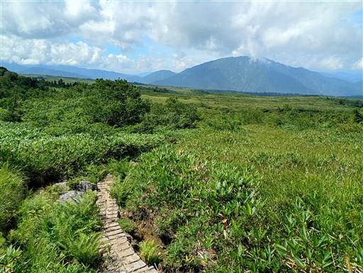
ワレモコウ。
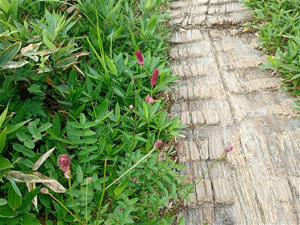
振り返ると大日岳が聳えている。立派な山容だ。
恐ろしいのはここが下界ではなく、まだ中腹ということ。
登山口までまだ700mほどの標高差がある。
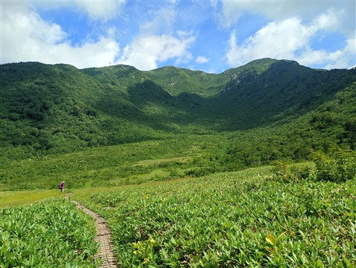
称名川の畔に建つ大日平山荘に到着。
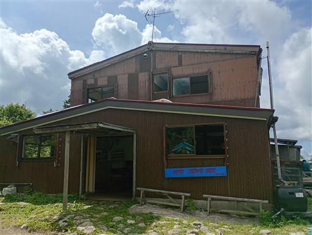
山荘の裏に流れる称名川。奥に見えているのは不動滝だ。
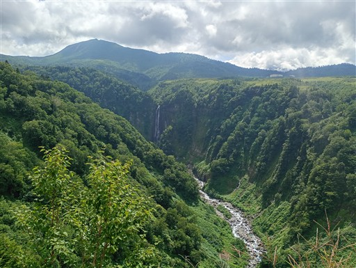
しばらくは気持ちの良い木道歩き。
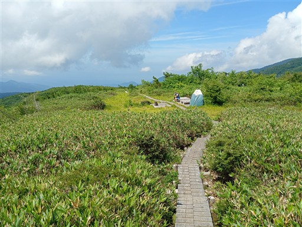
笹原から、少しずつ背の高い木が現れるようになってくる。
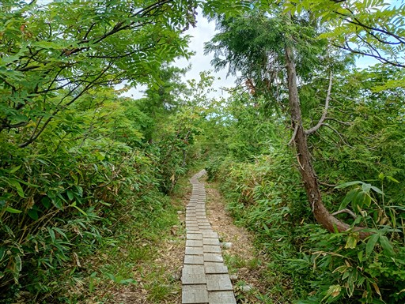
牛首を過ぎると一気に登山道は下降を始める。
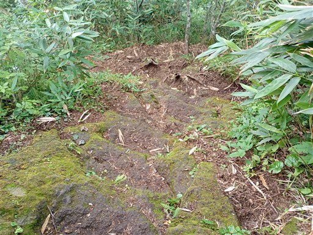
梯子。
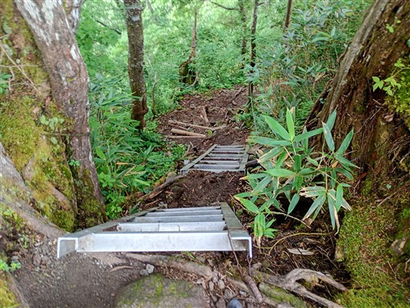
そして鎖場。
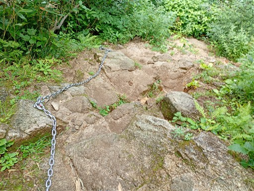
弥陀ヶ原から称名川に落ち込む対岸の崖が目の前に見える。
その反対側の道を歩いているので急斜面になるのは当たり前だ。
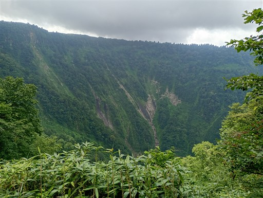
延々と続く階段。膝への負担が大きい。
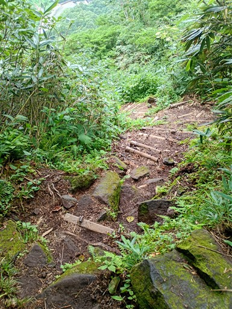
突然、大日岳登山口にポンと飛び出す。
ついにゴール地点にたどり着いた。
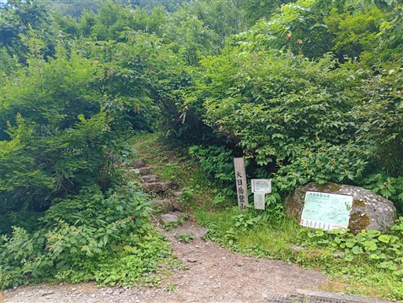
初日に称名滝は見学しているが、改めて見に行くことにする。
日曜の昼なので観光客の数は多い。
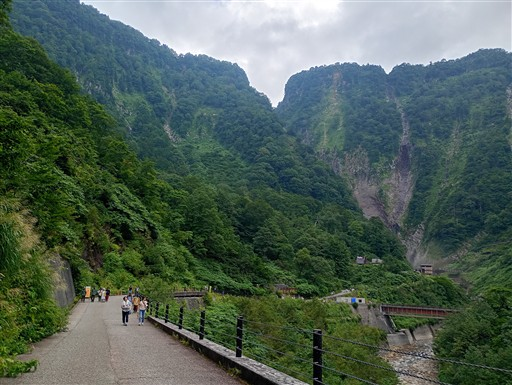
改めて眺める称名滝。展望台には登らず、橋から下段の滝のみ眺める。
滝から流れる川の色がきれいだ。
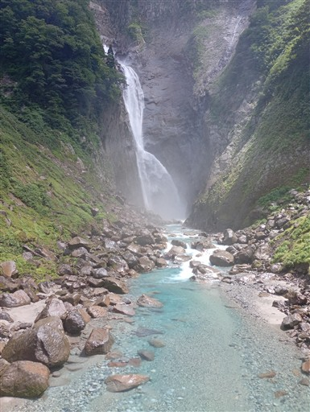
駐車場に戻ってくる。下山口に車を停めておくと、バスの時間を気にしなくてよいので楽だ。
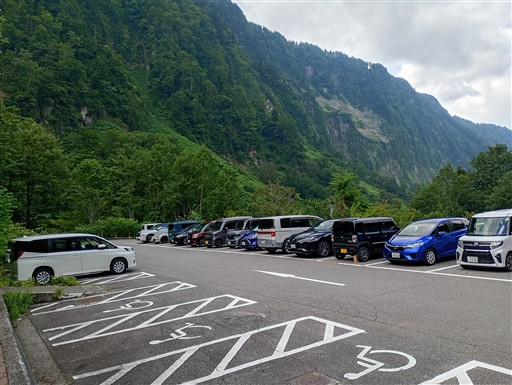
立山町にある「かふぇにこ」という店でシンガボール料理を食べて帰宅の途に就く。
今回の山行は基本的に天気が悪かった。薬師岳、立山、剱岳、奥大日岳のどこからも
全く展望が広がらなかったのは残念だった。
一方、ほとんど雨には降られず、どの日にも展望が広がる瞬間はあり、
行ってみたかった五色ヶ原からは快晴の景色が見られたのはありがたかった。
体力的には思った以上にきつく、15年振りのテント泊山行だからなのか、歳だからなのか分からないが
もう少し楽に歩けるようになりたいと思った山行だった。
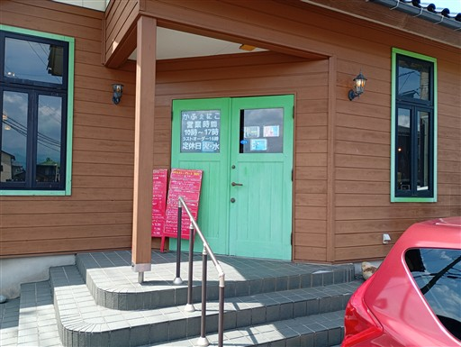